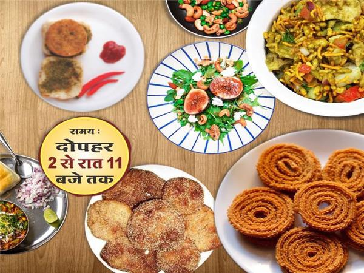

 Like every year this year again Marathi community is organizing Jatra at Gandhi Hall !! It is the most-awaited Marathi food festival of Indore & a trade fair !!
Get ready to savour delicacies such as Vadaa Paav, Bhakar-wadi, Pooran-Poli, Thali Peeth, Anaarse, Chakli, Misal-Paav, Usal, and much more !!